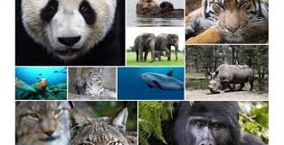

| TEMAS |
DESCRIPCION |
IMAGENES |
CAUSAS |
Tala excesiva de árboles
Emisiones y vertidos industriales a la atmósfera y a la hidrosfera.
Extracción
procesamiento y refinamiento de combustibles fósiles (petróleo, carbón y gas natural
Producción de energía con combustibles fósiles y otras fuentes no renovables.
Uso excesivo de automóviles y otros medios de transporte impulsados por gasolina o diésel
Uso indiscriminado de plásticos y otros materiales derivados del petróleo
Liberación de plásticos y objetos no biodegradables en espacios naturales |
 |
RECOMENDACIONES |
Separa la basura: Desde pequeños es bueno que los niños aprendan a separar los residuos para que se puedan reciclar
Usa productos que puedan reutilizarse:Hay muchos productos que se pueden usar varias veces para proteger la naturaleza. Por ejemplo, utiliza servilletas de tela en lugar de servilletas de papel.
Apaga las luces:Parece obvio, pero no nos damos cuenta de la cantidad de veces que encendemos la luz de una habitación que no ocupamos.
Consume frutas y verduras ecológicas: Los productos ecológicos cuidan el medio ambiente porque en su producción no se utilizan fertilizantes ni otros productos contaminantes.
Cierra los grifos correctamente:Cuando no utilices el agua, cierra el grifo y controla que no existan fugas |
 |
ANIMALES EN EXTINCION |
Mariposa monarca
Rinoceronte de Java
Gorila de montaña
Tigre
Panda gigante
Oso polar
Morsa del Pacífico
Pingüino de Magallanes, etc |
 |
| cuestionarioRedesSociales |